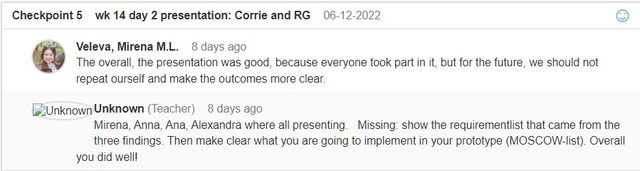

Feedback from teachers on our project + presentation
We received very positive feedback on our presentation.
To begin with, the teachers noticed that our outfits were coordinated, we were all wearing dark-blue jeans and black tops, and they appreciated that and told us it looked professional.
Penny said that our presentation was "very good" and the information from the presentation was complete, so there were no questions from teachers.
We received good feedback on our presentation design - especially how we showed our paper prototypes through a dynamic video, our team and how it worked together, how we presented, as well as on the website's design.
About the website, it was especially noted that the prices displayed were pretty good estimates (ranging from low to high based on real student experience), as well as that all costs were noted and displayed while many real-life real estate agencies have hidden costs.
Our user research and personas were diverse and we performed in-depth studies on the data received from the survey and interviews, and it was noted that we conducted even more user research on the UX of our website while working on it.
Learning outcomes: technical skills
I have proven my ability of developing and implementing an iterative process into my work as a student, as it follows:
- Trends and developments: documented my progress and evolution as a Media Design student through this portofolio.
- Iterative process: proven action taken based off feedback from teachers, teammates and users on my PEP and group project.
- Interactive prototypes: my chat function is relevant to the user needs and developed through paper and Figma prototypes. It is coded using HTML, CSS, and JavaScript.
- Target group: while developing the chat function webpage, the user's needs (timestamped messages and conversations, searchbar for the sidebar chat) and opinions (requested feedback on the best option for the open chat window and went with the most preferred option) were taken into account
The team smiling after the presentation went well :)
Feedback from my team, after the presentation
We were all happy that the presentation went really well and thanked each other for being such great teammates. Each of us believes that communication and work were done effectively between us and that we achieved our end goal.
Feedback from Dennis, before the presentation day
On 16.01.2022, I asked Dennis for help with an error I had in HTML with creating anchor hyperlinks, as well as for feedback on my PEP and progress.
He agreed that I made a lot of progress and he told me to quote the sources for the Java code used for the buttons (you can find them as comments in the .js code).
He also reminded me to add a reflection on the learning outcomes I have met.
Feedback from teachers
We presented Roopali the progress we have made with our project, and explained her that the website is not finished yet and that even then, it will not be fully functional due to required back-end coding that makes the features work (referring to chat function, filters).
We were told that that is not a problem and received the following feedback:
- The JavaScript button from the top right side that opens and collapses with options for the logged in user (such as Settings, Log Out) was a good idea.
- Anna has to include some more specific suggestive words for the user inside the search bar, so that it could be more understanbale. For example, instead of "Write something here...", we could suggest "Search for an address/ postcode".
- We have to make sure that we use the same CSS, especially for common elements such as our header.
Feedback from my team
Everything is going all between us and within our project, we have decided that our next goals are concluding everything to a single, common CSS file, and to work on the presentation.
PEP week 15 submission review
- A lot of improvement has been made with the new style, JS buttons, the playlist on the "About me" page, and the added feedback.
- I participate well in the project, but have to showcase my progress better.
- I should link my images from my own folders instead of hosting them online.
- I should reduce the amount of text and focus on transmitting the information.
- I should add comments to my code.
- I should talk about the use of UCD more.
Feedback on group project
During this week, I had a conversation with my study coach, Corrie, about my progress on the group project. I am working on the chat feature, so I asked for advice regarding a possible background for my chat windows.
I showed her my options and explained why none of them is ideal (contrast, texture, respecting the color scheme of our project) and she suggested that I could run a user test and ask people for opinions on what would suit my website best.
Feedback from teachers
This is how my Feedpulse looks like at the moment. I had a conversation with Corrie on Wednesday, and this is how I summed it up in the checkpoint that she opened:
Today (14.12.2022) I had a conversation with Corrie (my StudyCoach).
We first talked about my personal situation (I had a personal problem + I have recently moved to a new room)
Then, I presented her my portfolio in its current form, and explained my vision with it and how things should work. She told me that I have improved and reminded me to add a reflection on the learning outcomes.
We also talked about my group project, team, and how it is going; if we talked about dividing tasks to start coding from home. I showed her our designing progress from Figma and asked her what I could do about the background of the chat feature that I am working on (it is hard to find something appropiate for our chosen colors and contrast), and she came with two ideas: a dotted background, and to ask the users what they would prefer between a white background and something else.
Feedback from and for my group and classmates
This is how my team's Feedpulse looks like at the moment.
Each of us believes that we are collaborating well at the moment, although lately (since the presentation) we have been more focused on individual work on our PEPs.
Most of my group is going to leave to go home for the holidays at the end of this week so it's time for us to divide tasks between each other.
Self-reflective feedback
I believe that compared to my initial PEP version that I turned in (see example picture below), this version manages to showcase my evolution as a student.
My initial form of the PEP seemed to have too many pages, which is what distracted me and overwhelmed me a lot, because at some point I got lost into it, even though I had a Figma and paper prototype. Furthermore, the Figma prototype seemed to have looked way better like that compared to my finalized website, which is why I decided to start from scratch with the aestethic of the it.
I have improved my HTML and CSS skills, using less internal CSS and working on the overall style of my portoflio by having managed to find out how I want to shape it, and why.
I got inspired by Anne Imhof's Stedelijk Museum Expo's: YOUTH and AI WINTER, which I visited earlier this year and I resonated with the artists' point of view when transcribing youth through communist blocks and low saturated tones with unexpected violent splashes of color and sound/ movements.
This is why I decided to try and achieve the same while "storytelling" my experience of growth as a student.
As for the layout of my website, I was inspired by our Technical skills assignment from December 5, when we had to create an Imgur inspired image grid.
I enjoyed working on that and got positive feedback on it. I liked it so much that I tried to build a website around it by myself at home later that day, and that's when it all clicked and I realized I want my portfolio to be image based like this as well.
Learning outcomes
ICT and Media Design
"Iterative process
You show iterations in the work process and you explain how feedback from users and experts has contributed to your design choices. Your design meets the needs of the end user and is aesthetically justified."
I believe that in the past weeks, I have been able to argue around how my new PEP version is shaped around and with the help of feedback received from my teachers.
"Target group
During the developmental process you take the interests and needs of the end user into account."
I am working on developing my Figma prototype of the chat function for my team's housing website by taking into account the experience of the end user interacting with it and trying to find a way to choose an appropiate background for the chat window.
Professional skills
Personal leadership
I am further accentuating my willingness to get better at my work by taking the initiative to learn new things, as well as dive deeper into what I already know.
I am currently trying my best to come back with new forces and a fresh way to approach my university progress, and I am motivated to make things work, no matter how many hours of extra study I have to put into this.
Feedback from teachers
This was the grading I received after my initial portfolio submission, as well as group work and checkpoint moments I had by myself and with my team.
Regarding the Imgur inspired grid we had to submit on December 5, this was the feedback received from Petra:
"Nice work with keeping the images small :) Your code is nicely structured and clean as well. Your img tags have proper alt properties ! woohooo! :D Something to think about: {x] use margins instead of [br] to create spaces"
Feedback from my group and classmates

"The overall, the presentation was good, because everyone took part in it, but for the future, we should not repeat ourself and make the outcomes more clear."
This is what my team wrote for the checkpoint that was opened on week 14, after our presentation. The teachers appreciaqted that we were all present and taking turns in talking about the content of our project, but noticed we were sometimes repeating each others' pieces of information.
Self-reflective feedback
Regarding the grading received for my work, I was disappointed in myself for not advancing in the ICT and Media Design technical skills, but I think I deserved my grade.
At first, I was very demotivated, as coming from my own school system in Romania, this seemed like a very bad mistake.
But after reflecting on it for a while, I realized this is not the end of my university experience and I am not failing, so I found the motivation to start working on my PEP from scratch.
I went to the TU/E library and focused on studying there whenever time would allow me, and researched answers for all my questions in order to improve and be able to build the portfolio as it is right now.
I realized I should be kinder to myself and give myself time to learn, because before coming to university here I have never coded anything, and a lot of concepts can still feel strange to me, besides completely new.
Learning outcomes
ICT and Media Design
I have decided to learn how to use JavaScript to create button such as the "Jump back to the top" one (bottom right corner) and the menu one (top left corner). I believe this is a great improvement for my website, as it is based mostly on scrolling.
Professional skills
Personal leadership
You notice and seize opportunities. You motivate yourself. You take responsibility for your actions. You work result-oriented on your assignments. You make considered choices in your study programme. You recognize learning needs in yourself, are open to feedback, and reflect on this.
I have talked about this in the self-reflective feedback grid, analyzing my thought process based on feedback received, and the action taken from that.
Feedback from teachers
Since the Adopt a cat assignment from the technical skills day has been submitted by only one of the team members, I have not received direct Feedback on it.
Feedback from my group and classmates
During the professional skills day, we created a retroperspective document in which we named things we like about how our team work is going, and then nominated each one of us to give feedback to one person.
I received Feedback from Mirena. She said there is nothing I should start doing, suggested I could be more punctual, and appreciated that I am sociable and approach my work with enthusiasm.
Self-reflective feedback
I agreed with Mirena's feedback that I should be more punctual, and I will be working on that.
As for feedback from myself in terms of our group, I wrote that I enjoy coming up with ideas for what we could implement in our project, as well as wanting to help with sorting out the survey answers.
I particularily enjoyed taking interviews of our classmates for my team.
I found the Adopt a cat assignment difficult, because I struggled a lot with making everything fit correctly in the layout of the page, as well as coordinating the pictures that me and Alexandra needed to use for them to properly fit on both of our pages.
Learning outcomes
ICT and Media Design
"Interactive prototypes
You make digital products that create a specific, purposeful interaction between human and machine. As input for this you have made sketches, wireframes and prototypes. You use structure and style languages e.g. HTML and CSS
"
By now, we have created our first prototypes in form of documents and Figma, and physical sketches, in order to show our vision for the project.
Professional skills
" Investigative problem solving
You remain curious and ask questions throughout the solution process. You answer questions by using an appropriate approach: pragmatic, critical and based on sources.
"
I kept asking myself and my team questions about how we can find the best way to approach the way we want to proceed about both the website concept and how we want to start working on it.
Feedback from teachers
I had a conversation with Corrie (my StudyCoach) about why I had to miss some days of classes, and why I will have to miss more in the future, as a relative of mine died unexpectedly and I had to return back to Romania.
We talked about my learning process with ADHD and discussed why the HERA server couldn't be hosted until we found the way to solve it (the assignment will be submitted late). I asked for feedback on the contrast of the colors I used for my PEP and she advised me to ask Penny for feedback, and showed me that I can use the ''inspect'' feature on webpages to check their padding etc. settings.
Feedback from my group and classmates
I had to miss classes during most of this week due to personal circumastances, so me and my team had to collaborate online. I haven't received negative feedback on it, and my teammates were still pleased with my work. I did my best to fill in with my part of the task when I had to.
Self-reflective feedback
Due to the nature of the personal circumstances that made me have to miss classes, I don't think I was able to give myself feedback on my work, as I had to be with my family.
Learning outcomes
Professional skills
"Targeted interaction
You take the direct stakeholder into account when working on an assignment. You pay attention to what you want to communicate and in which shape you do this. You recognize tasks within the group work, and take on your role within the group. You address others about their behaviour and role within the group.
"
I believe that my team and I have managed to meet this criteria by taking into account the intwerviews and survery responses to develop user personas and modify/ adapt our website features according to their wants and needs.
Feedback from teachers
There wasn't a lot of Feedback during this week, as we were still in the phase where with the newly gathered team, we had to get to know each other and come up with a plan to make things work between each other.
During this week, I had my first talk with my StudyCoach, Corrie.
Feedback from my group and classmates
I missed a big part of week 11 due to personal issues, but on Monday on Tuesday I could receive Feedback from my team on the documents we wrote together and on the websites we had to build based on each other's ideas.
Self-reflective feedback
To give myself Feedback on my own portoflio as it is right now, I want to find a way to properly space out columns of text between each other and maybe insert a third column in certain sections of my pages. For the pages that don't have text divded into columns (like this one, as of right now), I want to find a way to style the page and the cateogries differently, so that an user reading my page will not have difficulties with it.
I would like to align my navigation bar differently and maybe underline hyperlinks to make it understandable that that is what they are. I am debating wheter or not I should add more elements to the bar, as in my PEP webpage I have hyperlinks to multiple other pages that cannot be accessed through anywhere else.
Learning outcomes
ICT and Media Design
"Trends and developments
You have studied the various developments in the area of digital experience design. You have formed an opinion about it. Based on this you justify your choice of study direction in this domain.
"
I believe that this is a skill that I will be continuously working on during this semester, by adapting the shape of the project and my portfolio based on feedback, requirements, and the end goal: the ease with which the user will access these.
Feedback from teachers
The first Feedback I received during week 10 was related to the first phase of the semester. I was graded "Orienting" and received positive comments on my work.
Feedback from and for my group and classmates
During this week, I received positive feedback from my teammates on how our team is working together after working together on documents that define our roles, values and expectations from each other.
The teachers have looked at our progress on the initial version of the PEPs that have to be turned in at the end of week 11, and opened a checkpoint for each member of the team. This is what I wrote:
"Our teacher checked in on our progress with the PEP's and suggested free platforms for images, illustrations and icons, as well as Adobe colors for creating our own color schemes based on images we see and like."
Self-reflective feedback
During the first week of our profile phase, I have realized that I am actually quite far behind compared to the level of some of my classmates, who have already started working with things I am just learning about.
This is a little daunting, but I hope that with time I can get to their level, as it is motivating to have skilled people around me.
Learning outcomes
Professional skills
"Future-oriented organisation
For a given assignment you – with guidance - make a planning (timing & part-tasks) with your team members. You make agreements about the expected quality. And while working on the implementation you take into account the consequences of your chosen solution for the people and organisations involved."
Together with my team, we have been working on documents that establish our working schedules, boundaries, task divisions, and ways to foresee situations that can happen while working on the project.